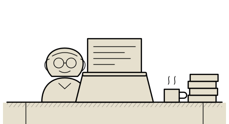
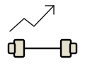
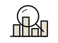
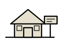
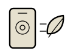
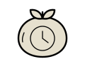
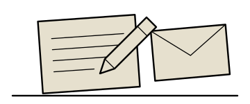

DDoS Attack Dashboard
The Master's research said the filtering was adaptive. The dashboard says it in colour, with an admin login.
React · Supabase · Recharts
ddos-attack-dashboard.vercel.appWritten, drawn and deployed by Krupal Mewada

Your correspondent, at his desk in Waterloo
Krupal Mewada completed a Master of Applied Computing at Wilfrid Laurier University in January 2026, arriving with a year already spent writing production code as an Associate Software Developer at Technetics IT Services in India.
He builds the whole thing: React and Next.js on the front, Node and Express behind it, PostgreSQL underneath, Docker and GitHub Actions to get it out the door. He is fond of TypeScript, suspicious of clever abstractions, and has strong feelings about migrations.
He is currently available for junior and mid-level roles across Kitchener–Waterloo, Toronto, and remote Canada. Enquiries below.
The Master's research said the filtering was adaptive. The dashboard says it in colour, with an admin login.
React · Supabase · Recharts
ddos-attack-dashboard.vercel.app
Five tables, cascading deletes, UUID keys throughout — and still no excuse to skip leg day.
Next.js · PostgreSQL · Docker · Actions

Reads your repos by byte weight and tells you which language you actually write — not the one on your résumé.
React · GitHub REST · Recharts
github-career-intel.vercel.app
Listings, filters, and a search that does not quietly round the square footage up.
TypeScript · React · Express · PostgreSQL
Insurance claims, charted. Somebody had to make the paperwork legible and it may as well have been me.
React 18 · TypeScript · Router v6 · Vite

Point the camera at your rubbish and it judges you, politely, on device.
Flutter · Firebase · ML Kit · SQLite

Twenty-five minutes of focus, injected into whichever tab is currently lying to you about productivity.
React · Vite · CRXJS · Shadow DOM
REACT & NEXT.JS — Components built to order, hooks fitted on the premises. React 19 patterns, ref passed as a plain prop, no forwardRef nonsense. Server components considered on request.
TYPESCRIPT — Types applied to inherited JavaScript. Reasonable rates. Discriminated unions a specialty. Satisfaction implied but not asserted.
NODE & EXPRESS — REST endpoints, bcrypt auth, session handling. Will explain what the middleware does before adding another one.
POSTGRESQL — Schemas designed, foreign keys constrained, deletes made to cascade properly the first time. Migrations written by hand and read twice.
DOCKER & CI/CD — GitHub Actions pipelines that build, test and ship to Vercel. Images published. Secrets kept secret.
TAILWIND CSS — Interfaces assembled without a stylesheet graveyard. Responsive down to the smallest phone you own.
FLUTTER & DART — Cross-platform apps with on-device ML. One codebase, two stores, no apology.
GIT, PROPERLY — Feature branches, pull requests, and commit messages a stranger can read in six months. No force-pushing to main.
WANTED — One junior or mid-level full-stack position. Kitchener–Waterloo, Toronto, or remote in Canada. Willing to learn your stack; will ask why before changing it.
